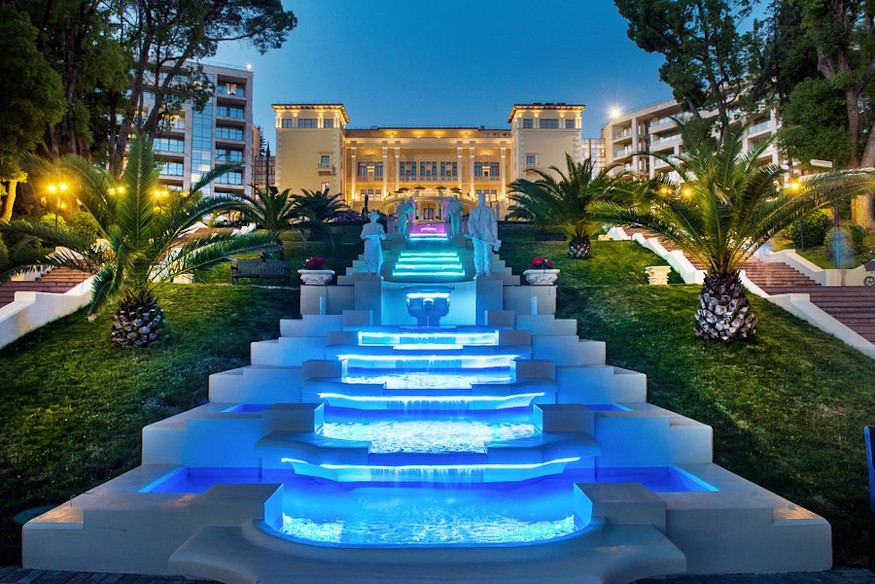

THE HISTORY
The area of the Russian city of Sochi was populated more than 100,000 years by ancient people of Asia Minor migrating through Colchis (olden Georgia). Ancient Greeks sailed to the region via the Black Sea in the 5th–6th centuries BC and encountered the Maeotae, Sindi, Cercetae, Zygii and other local tribes. They were the ancestors of the Abkhaz, Ubykh and Adyghe people who lived here until 1864; many toponyms in Sochi, including the city itself, originate from their languages. The first Russian outpost was set up in central Sochi in 1838 as a part of the Russian expansion along the Black Sea coast. The local resistance to this process resulted in the Caucasian War of 1817–1864, which ended in a Russian victory and the expulsion of the local population, mostly to Turkey. The Russian settlement built in the area was named Sochi in 1896 and received the status of a city (town) in 1917. The first tea plantations were established there in 1901–1905 and resulted in the production of the most prominent brand of Russian tea. From the end of the 19th century, the city has been developed as a dedicated area for sanatoriums and hospitals. It served as a rehabilitation center during World War II and, despite a decline following the dissolution of the Soviet Union, remains the major resort town of Russia. An important recent event was selection of Sochi as the site of the 2014 Winter Olympics and 2014 Winter Paralympics.

